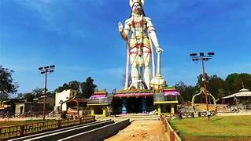
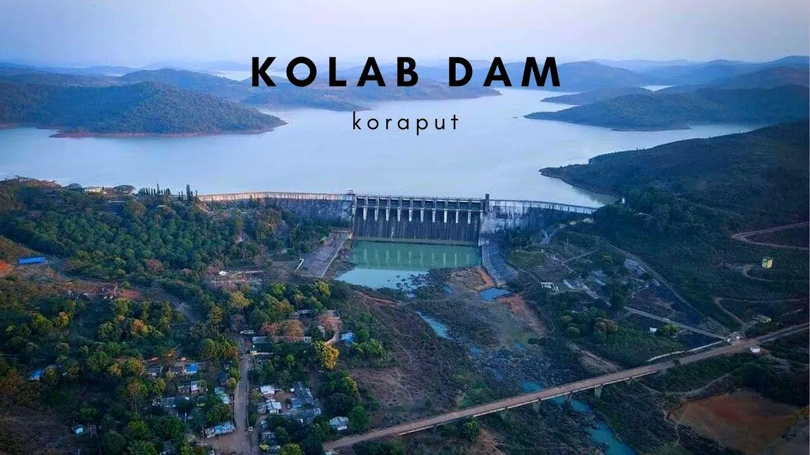
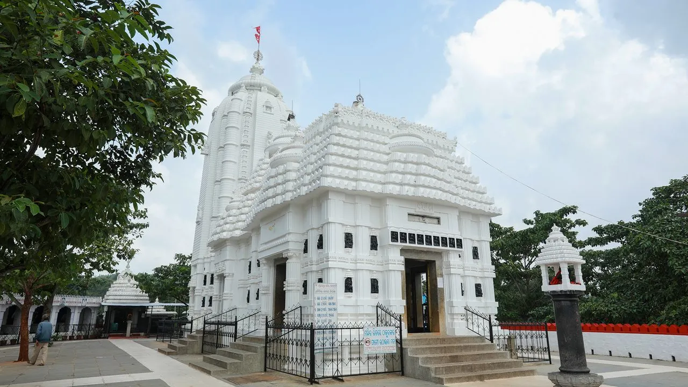
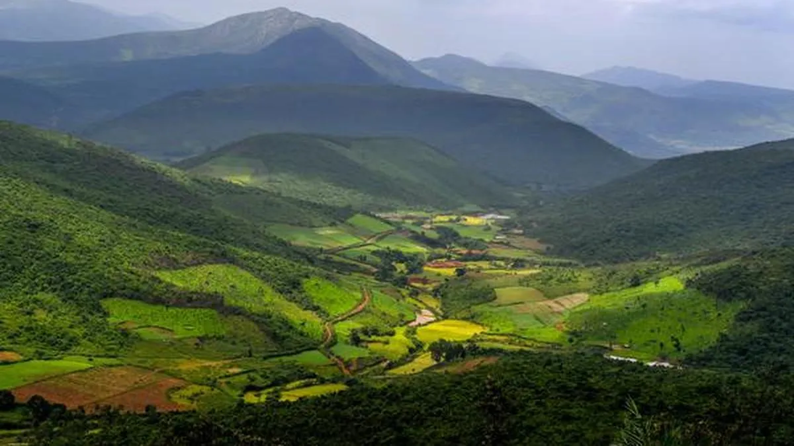

In & Around Jeypore

Local Bazaars & Markets
Experience the vibrant local life. From freshly harvested organic spices to exquisite tribal handicrafts and handloom textiles, these markets are a treasure trove.
.webp)
Jeypore Park (Jagannath Sagar)
Located in the heart of the city, this peaceful park surrounds the beautiful Jagannath Sagar lake. It's the perfect spot for relaxing evening walks and enjoying the local atmosphere.

Purunagarh Fort
Explore the historical ruins of the 17th-century fort of the Jeypore kingdom. An essential visit for history enthusiasts interested in ancient temples and local heritage.

Hanuman Temple (Bus Stand Area)
A popular and vibrant temple dedicated to Lord Hanuman, located near the central bus stand area. Known for its peaceful spiritual atmosphere and regular evening prayers.
The Wonders of Koraput

Kolab Dam & Botanical Garden
One of the most scenic spots near Jeypore, built on the Kolab River. Surrounded by lush hills, it's perfect for picnics, boating, and sunset views. Don't miss the botanical garden with its variety of flowers.

Gupteswar Cave Temple
A famous cave temple dedicated to Lord Shiva, featuring a large natural Shiva Linga. Nestled in forested hills, it attracts thousands during Mahashivaratri and Shravan.

Duduma Waterfalls
Standing at 175m, it's one of the highest and most powerful waterfalls in Odisha. Offers spectacular mountain views and is a haven for nature photography and trekking.

Sabari Srikhetra
Also known as the Jagannath Temple of Koraput, this spiritual sanctuary is unique for its tribal inclusivity and serene hilltop location.

Deomali Peak
The highest mountain peak in Odisha. Experience amazing sunrises, foggy hills, and challenging trekking routes. Popular for camping and adventure lovers.